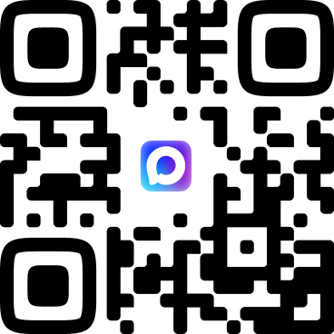

Вы подключили совместную работу
для example@mail.ru. Настройте доступ
для example@mail.ru

Если вы владелец
Получите ссылку-приглашение в чат-боте в MAX и отправьте её участникам example@mail.ru
Если вы участник
Получите свой постоянный пароль в чат-боте в MAX